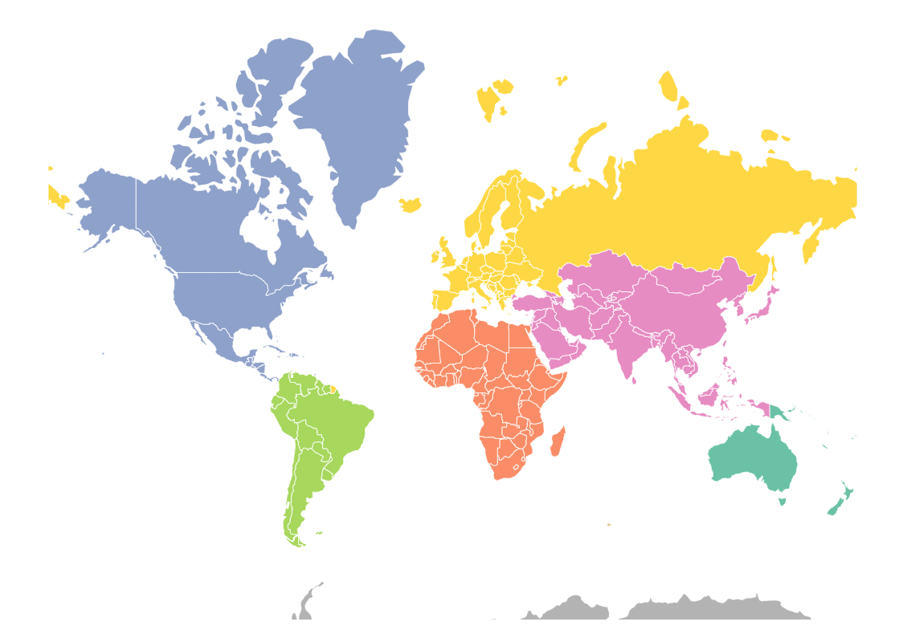
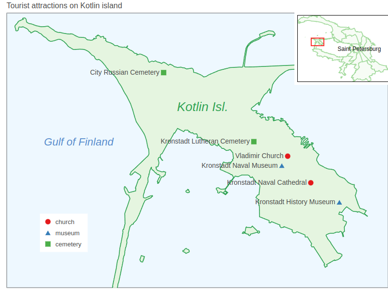
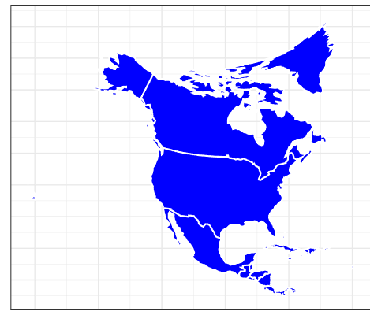
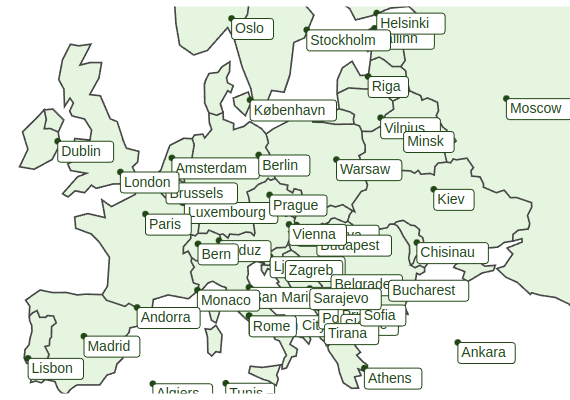

Geospatial Charts
GeoTools is an open source Java GIS Toolkit.
Lets-Plot supports visualization of SimpleFeature objects organized in SimpleFeatureCollection, as well as individual Geometry (org.locationtech.jts.geom) and ReferencedEnvelope (org.geotools.geometry.jts) objects.
Lets-Plot API includes the SpatialDataset class serving as a bridge between external spatial data-types and Lets-Plot geometry layers.
A set of Kotlin extension methods with the signature toSpatialDataset(decimals: Int = 10): SpatialDataset is provided to facilitate converting GeoTools objects to an instance of the SpatialDataset class.
The instance of SpatialDataset then can be passed to a plot geometry layer via the map or data parameters.
The Lets-Plot library recognizes the following three 2D-geometry types:
Points
Lines
Polygons
These shapes can be plotted using various geometry layers that depend on the type of the shape:
Lines :
geomPathPolygons :
geomPolygon,geomMap.geomRectwhen used with Polygon shapes displays corresponding bounding boxes.
All coordinates must be in decimal degree units, in "WGS 84" coordinates.
Creating Maps in JVM-Based Applications
For general information on using the Lets-Plot library in JVM-based application, see: USAGE_BATIK_JFX_JS.md
Maven Artifacts
In addition to the Maven artifacts that are required for regular plots, the artifact lets-plot-kotlin-geotools must be included to make the toSpatialDataset() method available.
You can include it into a Gradle project.
The gt-geojson artifact from GeoTools must be also included (see compatible version in CHANGELOG.md).
JVM-Based Examples
The 'geotools-batik' subproject contains a set runnable examples that use Apache Batik SVG Toolkit for rendering.
Creating Maps in Notebooks
Lets-Plot can visualize maps in Kotlin Notebook, Datalore or Jupyter with Kotlin Kernel.
You can include all necessary dependencies into your notebook using the following "line magics":
When declaring additional GeoTools dependencies, check the compatible version in the CHANGELOG.md:
Example Notebooks
The world map with Lets-Plot and GeoTools: geotools_naturalearth.ipynb

Inset map of Kotlin island: spatialdataset_kotlin_isl.ipynb

Using exotic map projections: projection_provided.ipynb

Label geometry: text_geoms.ipynb
